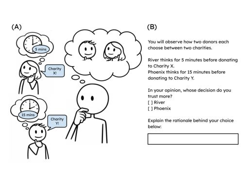
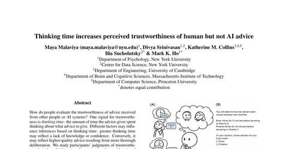

The partnership is the thing to measure, not the person or the model alone.
Whether AI help leaves someone more capable, how they take its advice, and what it costs them are properties of the pair. So the pair is what we measure: how help feels against what it does, how a person reads a partner's advice, and what passes between two partners who see the world differently.
What we mean by a thought partner.
A thought partner is a system that thinks with you rather than for you. In the 2024 paper that set out the idea, that takes three things: the system has a model of you, you can understand it, and the two of you share a model of the world. All three are properties of the pair; neither member has them alone.

What thinking with a partner costs.
The first things to measure about a pair are what the help costs the person and whether that cost is visible to them. One paper lists the risks; another finds a gap between how the help feels and what the clock says.
Thought partnerships carry risks of their own.
A 2026 commentary sorts the risks of thinking with an AI into real-time, individual and societal risks, each split by whether the partner is performing appropriately and whether it is being used appropriately. The six categories are illustrated with medical and policy examples: generic, context-insensitive deliberation, unclear credit for who contributed what, user manipulation, cognitive atrophy, systemic fragility, and homogeneity of thought. The paper proposes ways to check for each, including analysis of thinking traces to attribute contributions and periodic assessment of professionals with and without access to an AI partner, and mitigations such as protocols for when to delegate, training in critical judgment, logging, and preserving spaces where people deliberate with each other.
Help that feels faster than it is.
In a pre-registered study, 1,237 people either predicted or completed 24 short tasks, working alone or with GPT-4o. People expected the AI to cut completion time by 68.5 seconds, against 17.1 seconds for a highly intelligent other participant. Actual AI-assisted time was 57.8 seconds longer than predicted, while predictions for working alone were accurate. The AI sped up only 3 of the 24 tasks, and on one logic task it made completion 111 seconds slower because its answer was verbose. Reported effort still fell by 0.61 points on the NASA-TLX scale, so the help felt lighter even when it was not faster.

Guess your time, then do two tasks.
People expect an AI assistant to save them a lot of time. In a large study, working with one felt easier and took longer than people had predicted, while their predictions for working alone were on target. The lab studies gaps like this between how help feels and what it does, because that is where a thought partner can mislead. You will guess your time for two short tasks, do them, one alone and one with an assistant, and then compare your guess, your memory, and the clock.
What the paper found
1,237 people either predicted or completed 24 short tasks, working alone or with GPT-4o. People expected the AI to cut completion time by 68.5 seconds; actual AI-assisted time was 57.8 seconds longer than predicted, while predictions for working alone were accurate. The AI sped up only 3 of the 24 tasks. Reported effort still fell with the AI, even though time did not.
What you just did
You predicted, then did, then remembered two short tasks, one alone and one with an assistant that answers after a delay. The paper compares predicted to actual completion time under the same two conditions; the gap it reports is specific to the AI condition.
Task A, alone, is a short sum. Task B, with an assistant that replies a few seconds after you ask, is a one-sentence rewrite. Guess your seconds for each, then start.
What is 27 + 56 + 38?
Rewrite in the past tense: "The committee reviews the proposals and sends its decision to the applicants."
Sure, happy to help with that. Here is the sentence rewritten in the past tense:
The committee reviewed the proposals and sent its decision to the applicants.
I changed "reviews" to "reviewed" and "sends" to "sent"; the rest of the sentence stays the same because "its decision" and "the applicants" do not carry tense. Let me know if you would like a more formal or a shorter version.
How a person reads the partner's advice.
The second property of the pair is how the person judges what the partner says. One cue people use with each other, time spent thinking, means much less to them when the adviser is an AI.
Thinking longer earns trust for a person, much less for an AI.
In a vignette study, two advisors think for different lengths of time and choose differently, and participants say whose decision they trust more. With human advisors, across all 27 scenarios, participants chose the one who had thought for longer 74.8% of the time, most strongly for financial and technical decisions and weakly or in reverse for low-stakes choices such as a party playlist. When the same scenarios described AI systems, the share fell to about 58%, close to chance, though it rose as the gap in thinking time grew. Independent of the size of that gap, people were 3.67 times more likely to choose the slower advisor when it was a person.

Whose decision do you trust more?
When a person takes longer to decide, we tend to read the extra time as care and trust the decision more. This study asked whether the same reading applies when the adviser is an AI system. We care because how people judge AI advice shapes when they take it, and this cue turns out to work differently for machines. In the box, four short scenes each show two advisers who thought for different lengths of time, people in two scenes and AI systems in the other two; pick the one you trust more.
What the paper found
Across all 27 of the paper's two-advisor scenarios, participants chose the advisor who had thought for longer 74.8% of the time when the advisors were people, and about 58% of the time when the same advisors were described as AI systems, which is close to chance. Independent of the size of the time gap, people were 3.67 times more likely to choose the slower advisor when it was human. Preference for the slower AI did rise as the time gap grew.
What you just did
You answered the paper's question, whose decision do you trust more, twice for people and twice for AI systems. The paper's measure is the share of those answers that go to the longer-thinking advisor, split by whether the advisor was human or AI.
Resisting bad advice is a separate skill from solving.
A pair is only as good as the weaker of two skills, taking good advice and resisting bad advice. In this game the advisor is sometimes wrong on purpose. The paper behind it measures both skills in language models: how persuasive a model is as an advisor and how vigilant it is as the one being advised. You estimate the number of dots in a brief flash, read the advisor's number, and give a final answer, ten times, without being told which rounds are honest.
What the paper found
What you just did
The dots appear for under a second. Estimate how many, read the advisor's number, then give your final answer.
Teach a student who sees the world a little differently.
Here is the pair at work in its smallest form: a teacher and a student each have their own map of eight familiar objects, and the two maps do not quite agree. The teacher sees a new object and may only say things like "it is closer to A than to F"; the student has to work out where it is from messages judged on a map it cannot see. Play either role and count how many messages the pair needs, then reveal the other map and see whether knowing how the other player sees things can stand in for agreeing with them.
What the paper found
Each message of the form "closer to this than to that" cuts the receiver's map in half along the line midway between the two objects. When the two maps agree, about log n messages pin the object down; when they disagree on a fraction ε of such judgments, each message carries only C(ε) of a bit and the count grows as 1 / C(ε). A receiver who knows that most messages arrive reversed can flip them all and learn as fast as an aligned pair.
What you just did
As the teacher you chose which pairs to ask about without seeing how the student would read them; the good pairs are the ones whose midline splits what the student still believes in half, on the student's map. As the student you decoded messages that were true on a map you could not see. Revealing the other player's map is a shortcut the paper's analysis does not allow, and it is worth trying: an accurate model of the other player can substitute for agreeing with them.
Eight familiar objects, A to H, sit on each player's map, and the two maps do not quite agree. Messages take one form only: "the new object is closer to A than to F", judged on the sender's own map. Choose a role. The slider sets how different the two maps are.
The question in front of the lab now is whether a person is more capable after the partner is gone. The measure is performance on held-out tasks, done without the AI, after a period of working with it, rather than the quality of the pair's joint output.
Papers on this page


